Introduction to Organic Chemistry 1
Topic 11.1–11.3 · Introduction to Organic Chemistry Part 1
On this page
Introduction
The word organic is one of the most overused in the English language. People use it as a derogatory term in phrases like, “don't eat that; it's not organic.” Of course, there is a precise scientific definition of the word. In science, organic can be a biological or chemical term. In Biology it means anything that is living or has lived. In Chemistry, an organic compound is a compound of carbon, usually containing C–H bonds.1 A few simple carbon compounds, such as carbon monoxide, carbon dioxide, carbonates, hydrogencarbonates and cyanides, are traditionally treated as inorganic.
Organic chemistry is a major branch of chemistry dealing with the study of the compounds of one element, carbon. The carbon atom is one of the few that will form strong bonds with itself. This means that carbon atoms can form chains and rings onto which other atoms can be attached. Carbon is crucial to humans because the very cells and fluids that we are made up of consist of organic molecules, carbon compounds. The drugs that we take, the food that we eat and the things that we use every day are mostly carbon-based materials. Indeed, carbon is one of the most important elements in the periodic table (the others being hydrogen and oxygen) from the point of view of the human race.
This note covers 9476 Topic 11.1: how organic molecules are written, named and shaped. Part 2 covers isomerism (11.2) and Part 3 covers organic reactions and mechanisms (11.3).
Formulae
The same molecule can be written in several ways. Each is useful for a different job.
| Type of formula | What it shows | Butan-2-ol |
|---|---|---|
| Empirical | The simplest whole-number ratio of atoms of each element | C4H10O |
| Molecular | The actual number of atoms of each element in one molecule | C4H10O |
| Structural | The minimal detail needed to show how the atoms are arranged, without showing every bond | CH3CH(OH)CH2CH3 |
| Displayed (full structural) | Every atom and every bond | Fig 1, left |
| Skeletal | Carbon chains as zigzag lines: C atoms at the ends and corners, H atoms on C not shown; other atoms and functional groups shown | Fig 1, centre |
| Stereochemical | The 3D arrangement: a wedge points towards you, a hashed wedge away from you, a plain line is in the plane of the paper | Fig 1, right |
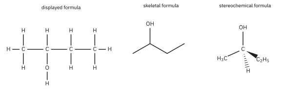
The empirical and molecular formulae are often different. Ethanoic acid, CH3COOH, has the molecular formula C2H4O2 and the empirical formula CH2O. For butan-2-ol they happen to be the same, because C4H10O cannot be divided further.
Functional groups and homologous series
A functional group is an atom or group of atoms in a molecule that is responsible for its characteristic chemical reactions. Compounds with the same functional group form a homologous series:
- they have the same general formula;
- successive members differ by CH2;
- they have similar chemical properties (the same functional group reacts in the same way);
- their physical properties, such as boiling point, change gradually as the chain gets longer.
The series you must know for 9476 are in the table below, together with the alkynes, which you will meet in examples (ethyne, propyne) although they are not a separate 9476 class. R stands for an alkyl group (CnH2n+1) and Ar for an aryl group such as phenyl, C6H5.
| Series | Functional group | General formula | Example |
|---|---|---|---|
| Alkanes | C–C and C–H only | CnH2n+2 | propane, CH3CH2CH3 |
| Alkenes | C=C | CnH2n | propene, CH2=CHCH3 |
| Alkynes | C≡C | CnH2n−2 | ethyne, HC≡CH |
| Arenes | benzene ring | CnH2n−6 (alkylbenzenes) | methylbenzene, C6H5CH3 |
| Halogenoalkanes | C–X (X = F, Cl, Br, I) | CnH2n+1X | bromoethane, CH3CH2Br |
| Halogenoarenes | X on a benzene ring | ArX | chlorobenzene, C6H5Cl |
| Alcohols | –OH on an alkyl carbon | CnH2n+1OH | ethanol, CH3CH2OH |
| Phenols | –OH on a benzene ring | ArOH | phenol, C6H5OH |
| Aldehydes | –CHO | CnH2n+1CHO | ethanal, CH3CHO |
| Ketones | C=O between two C atoms | RCOR′ | propanone, CH3COCH3 |
| Carboxylic acids | –COOH | CnH2n+1COOH | ethanoic acid, CH3COOH |
| Acyl chlorides | –COCl | RCOCl | ethanoyl chloride, CH3COCl |
| Esters | –COO– | RCOOR′ | ethyl ethanoate, CH3COOCH2CH3 |
| Amines | –NH2 (primary) | CnH2n+1NH2 | ethylamine (ethanamine), CH3CH2NH2 |
| Amides | –CONH2 | RCONH2 | ethanamide, CH3CONH2 |
| Amino acids | –NH2 and –COOH | H2NCH(R)COOH | 2-aminopropanoic acid (alanine) |
| Nitriles | –C≡N | RCN | ethanenitrile, CH3CN |
In the general formulae, n can be 0 for aldehydes and carboxylic acids: HCHO is methanal and HCOOH is methanoic acid.
Naming organic compounds
A systematic (IUPAC) name is built from three parts: prefixes (substituents and their positions) + stem (the length of the main chain) + suffix (the main functional group).
| Carbons | 1 | 2 | 3 | 4 | 5 | 6 | 7 | 8 | 9 | 10 |
|---|---|---|---|---|---|---|---|---|---|---|
| Stem | meth | eth | prop | but | pent | hex | hept | oct | non | dec |
Suffixes and prefixes for the 9476 groups:
| Group | Suffix (main group) | Prefix (substituent) |
|---|---|---|
| Carboxylic acid, –COOH | -oic acid | carboxy- |
| Ester, –COOR′ | alkyl …-oate | – |
| Acyl chloride, –COCl | -oyl chloride | – |
| Amide, –CONH2 | -amide | – |
| Nitrile, –C≡N | -nitrile | cyano- |
| Aldehyde, –CHO | -al | oxo- |
| Ketone, >C=O | -one | oxo- |
| Alcohol, –OH | -ol | hydroxy- |
| Amine, –NH2 | -amine | amino- |
| Alkene, C=C | -ene | – |
| Alkyne, C≡C | -yne | – |
| Halogen, alkyl | – | fluoro-, chloro-, bromo-, iodo-; methyl-, ethyl- |
The groups are listed in order of priority. When a molecule has two groups, the one higher in the table gives the suffix and the other becomes a prefix, as in 2-hydroxypropanoic acid (lactic acid) or 2-aminopropanoic acid.
Rules
- Find the longest carbon chain that contains the main functional group. Its length gives the stem.
- In aldehydes, carboxylic acids, acyl chlorides, amides and nitriles, the carbon of the functional group is part of the chain and is always C1. So CH3CH2CN is propanenitrile (3 carbons), not ethanenitrile.
- Number the chain from the end that gives the main functional group the lowest number, then the C=C, then the substituents.
- Put the number of the carbon in front of the part it describes: but-2-ene, propan-2-ol, 2-methylpropane.
- Use di-, tri-, tetra- for repeated substituents (2,2-dichloropropane), and list different substituents in alphabetical order, ignoring di-, tri- (1-bromo-2-methylpropane, not 2-methyl-1-bromopropane).
- Write commas between numbers and hyphens between numbers and letters.
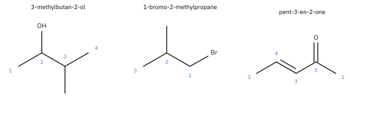
Worked examples (Fig 2).
- 3-methylbutan-2-ol. The longest chain with the –OH group has 4 carbons (butan-). Numbering from the left gives the –OH carbon 2 and the methyl carbon 3; from the right it would give –OH 3. Lowest number for the main group wins.
- 1-bromo-2-methylpropane. The longest chain is 3 carbons (propane). Number from the Br end: Br on C1, methyl on C2. Prefixes in alphabetical order: bromo before methyl.
- pent-3-en-2-one. Five carbons; the ketone is the main group, so it gets the lowest number (2); the C=C then starts at C3.
Ketones with no choice of position drop the number: propanone, butanone. Benzene compounds are named as substituted benzenes (methylbenzene, chlorobenzene, 1,4-dimethylbenzene), with a few accepted common names: phenol (C6H5OH) and benzoic acid (C6H5COOH). Esters are named from the alcohol part first, then the acid part: CH3COOCH2CH3 is ethyl (from ethanol) ethanoate (from ethanoic acid).2
Hybridisation
A theory to explain an observation
Chemists in the 1800s found that when one of the H atoms in methane was replaced by a Cl atom, it made no difference which H atom was replaced: there is only one CH3Cl. Furthermore, when a second H atom was replaced, it again made no difference which one: there is only one CH2Cl2. In three-dimensional space, the only arrangement that gives this property is a tetrahedral one, with the H atoms at the corners of a tetrahedron around the carbon. (A flat, square arrangement would give two different forms of CH2Cl2.)
In the early twentieth century, more and more was learned about electrons and orbitals. Once quantum mechanics described atomic orbitals (Schrödinger, 1926), chemists knew that the 2s orbital is spherical and that the three 2p orbitals are dumbbells along the x, y and z axes, at 90° to one another. This created a dilemma for theoretical chemists. How can the 1s2 2s2 2p2 arrangement of electrons in a carbon atom, with only two unpaired electrons, give four identical C–H bonds pointing to the corners of a tetrahedron?
The answer quite simply is that it cannot, at least not directly. Nevertheless, they persisted and came up with a model that you need to know about. It is called hybridisation (Pauling, 1931).
Adjustment of thinking
The s, p, d and f orbitals that you know of are atomic orbitals. They are regions of space around one nucleus where an electron is likely to be found. When an atom forms bonds, its atomic orbitals can be mixed to give new orbitals that point in better directions for overlap with other atoms. These hybrid orbitals are still atomic orbitals, centred on one atom. A covalent bond forms when an orbital on one atom overlaps with an orbital on another atom, and the shared pair of electrons occupies the region of overlap.
Recall Chemical Bonding
In Topic 2 (Chemical Bonding, Part 1) you met the two ways in which orbitals overlap:
- a σ bond forms by end-on (head-on) overlap; the electron density lies along the axis between the two nuclei;
- a π bond forms by sideways overlap of two p orbitals; the electron density lies above and below the axis.
A single bond is one σ bond. A double bond is one σ bond and one π bond. A triple bond is one σ bond and two π bonds.
When a carbon atom bonds to other atoms, one 2s electron is first promoted to the empty 2p orbital (1s2 2s1 2p3), so that carbon has four unpaired electrons and can form four bonds. The energy needed is more than paid back by forming two extra bonds. The 2s orbital and some or all of the 2p orbitals are then mixed and rearranged to give the new hybrid orbitals. Each hybrid orbital is equivalent to the others and contains one electron. All four orbitals may be mixed (sp3), or just three (sp2) or two (sp), leaving one or two p orbitals unchanged.
sp3 hybridisation
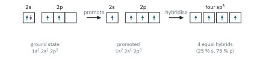
The first is the sp3 hybridisation that we have already talked about. sp3 hybridisation results from the combination of the s orbital and all three p orbitals in the second energy level of carbon. It results in four hybrid orbitals and occurs when a carbon atom is bonded to four other atoms. The geometric arrangement of those four hybrid orbitals is called tetrahedral. With sp3 hybridisation, carbon forms 4 σ bonds, which also means carbon forms 4 single bonds.
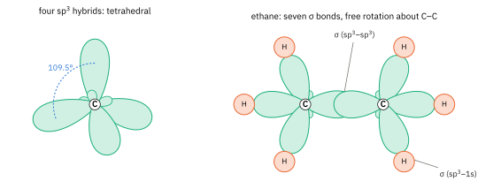
- sp3 occurs when a C has 4 attached groups (4 σ bonds, no π bond).
- The 4 sp3 hybrids point towards the corners of a tetrahedron at 109.5° to each other.
- Each sp3 hybrid is involved in a σ bond.
- In ethane, C2H6, each C uses one sp3 hybrid to overlap end-on with an sp3 hybrid on the other C (the C–C σ bond) and three sp3 hybrids to overlap with the 1s orbitals of three H atoms. All angles are 109.5°.3
- A σ bond is symmetrical about the axis between the nuclei, so the overlap does not change when one CH3 group rotates. There is free rotation about the C–C single bond.
sp2 hybridisation
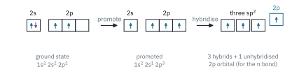
The sp2 hybridisation uses the s orbital and two of the p orbitals from the second energy level of carbon to form three hybrid orbitals. There is also an unchanged p orbital. The three sp2 hybrid orbitals lie in a flat plane with 120° angles between them. The leftover p orbital lies at 90° to the plane of the hybrid orbitals. This kind of hybridisation occurs when a carbon atom is bonded to three other atoms. If it is a very simple molecule with just the carbon atom and the other three atoms, it would be a flat triangular molecule. If this is part of a larger molecule, this part would have a flat triangular shape.
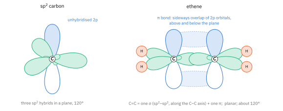
- sp2 occurs when a C has 3 attached groups (one of the bonds is a double bond).
- The 3 sp2 hybrids point towards the corners of a triangle at 120° to each other.
- Each sp2 hybrid is involved in a σ bond.
- The remaining p orbital forms the π bond (often with another carbon atom).
- In ethene, C2H4, the C=C bond is one σ bond (sp2–sp2, end-on) and one π bond (2p–2p, sideways). For the two p orbitals to overlap sideways they must be parallel, so all six atoms lie in one plane. The molecule is planar, with bond angles of about 120°.4
The π bond is weaker than the σ bond, because sideways overlap is less effective than end-on overlap. From the Data Booklet, the C=C bond energy is 610 kJ mol−1 and the C–C bond energy is 350 kJ mol−1, so the π bond contributes only about 610 − 350 = 260 kJ mol−1. Its electrons are also more exposed, above and below the plane of the molecule. Both facts explain why alkenes are much more reactive than alkanes (Part 3).
sp2 hybridisation in benzene
In benzene, C6H6, each carbon atom is bonded to two other carbon atoms and one hydrogen atom, so each carbon is sp2 hybridised. The six C–C σ bonds and six C–H σ bonds all lie in one plane: benzene is a planar regular hexagon with all bond angles 120°.
Each carbon has one electron left in its unhybridised 2p orbital, at 90° to the plane of the ring. Each p orbital overlaps sideways with the p orbitals on both of its neighbours, not just one. The result is a continuous ring of π electron density above and below the plane of the ring, containing all 6 π electrons. These electrons are not held between any particular pair of carbon atoms: they are delocalised over the whole ring.
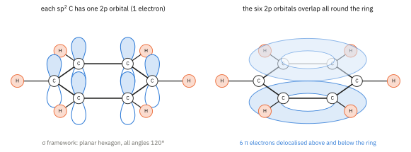
Evidence for delocalisation: all six C–C bonds in benzene are the same length, 0.139 nm, between the length of a C–C single bond (0.154 nm) and a C=C double bond (0.134 nm). A structure with three separate C=C bonds (the Kekulé structure) would have three short and three long bonds. This is why benzene is drawn as a hexagon with a circle: the circle stands for the 6 delocalised π electrons. Delocalisation also makes benzene unusually stable, which explains much of its chemistry (Part 3 and Topic 11.4).
sp hybridisation
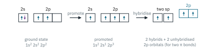
There is still a third type of hybridisation: sp hybridisation. The s orbital and one of the p orbitals from carbon's second energy level are combined to make two hybrid orbitals. These form a straight line, with an angle of 180° between them: they point in exactly opposite directions from the centre of the carbon atom. Because sp hybridisation uses only one of the p orbitals, there are still two p orbitals left which the carbon can use. These p orbitals are at right angles to one another and to the line formed by the hybrid orbitals. This kind of hybridisation occurs when a carbon atom is bonded to two other atoms.
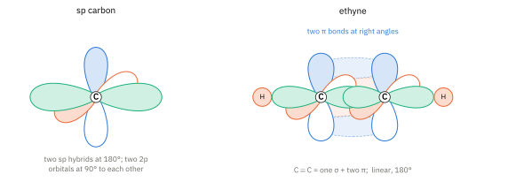
- sp occurs when a C has 2 attached groups (a triple bond, or two double bonds).
- The 2 sp hybrids point in opposite directions, at 180° to each other.
- Each sp hybrid is involved in a σ bond.
- The remaining two p orbitals form the two π bonds.
- In ethyne, C2H2, the C≡C bond is one σ bond (sp–sp) and two π bonds, at right angles to each other. Together the two π bonds form a cylinder of electron density around the C–C axis. The molecule is linear: H–C≡C–H, 180°. The C≡C bond (0.120 nm) is shorter than C=C.
Summary
| Hybridisation of C | Atoms attached | Arrangement and angle | Bonds at that C | 9476 example |
|---|---|---|---|---|
| sp3 | 4 | tetrahedral, 109.5° | 4 σ | ethane |
| sp2 | 3 | trigonal planar, 120° | 3 σ + 1 π | ethene, benzene |
| sp | 2 | linear, 180° | 2 σ + 2 π | ethyne |
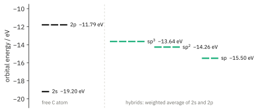
Predicting shapes in other molecules
You can predict the shape around any carbon, nitrogen or oxygen atom in an organic molecule by counting the regions of electron density around it, exactly as in VSEPR theory (Topic 2, Part 2). Each σ bond counts as one region, each lone pair counts as one region, and a double or triple bond counts as one region (its π electrons lie in the same direction as its σ bond).
| Regions round the atom | Hybridisation | Arrangement | Bond angle | Examples |
|---|---|---|---|---|
| 4 | sp3 | tetrahedral | 109.5° (4 bond pairs); about 107° at N with 1 lone pair; about 104.5° at O with 2 lone pairs | C in CH3–; N in CH3NH2; O in CH3OH |
| 3 | sp2 | trigonal planar | 120° | C in C=C and C=O |
| 2 | sp | linear | 180° | C in C≡C and C≡N |
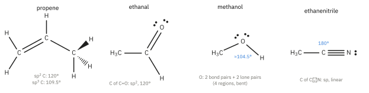
Worked example: propene, CH2=CH–CH3. C1 and C2 each have three regions (C1: two C–H and the C=C; C2: one C–H, the C=C and the C–C), so they are sp2 and the angles around them are 120°. C3 has four σ bonds, so it is sp3 and the angles around it are 109.5°. All the atoms around the C=C (the two C atoms, the three H atoms on them, and C3) lie in one plane.
The same method works for other atoms. In ethanal the carbonyl carbon is sp2 and trigonal planar. In methanol the oxygen has two bond pairs and two lone pairs, so the C–O–H angle is predicted to be about 104.5°, as in water.5 In ethanenitrile the C≡N carbon is sp and the C–C≡N unit is linear. A further example is carbon dioxide, O=C=O: the carbon has two regions (two double bonds), so it is sp hybridised and linear, with its two π bonds at right angles to each other, just like ethyne.
Additional information
- The word comes from the old idea that organic compounds could only be made by living things, through a “vital force”. In 1828 Friedrich Wöhler made urea, an organic compound, from ammonium cyanate, an inorganic salt, and the idea gradually died. ↩
- Amines can be named either as alkylamines (ethylamine) or as alkanamines (ethanamine). Both names are used; the 9476 syllabus and most textbooks use ethylamine. ↩
- Bond lengths in this note (C–C 0.154 nm, C=C 0.134 nm, benzene 0.139 nm, C≡C 0.120 nm) are standard literature values. They are not in the Data Booklet. ↩
- The measured H–C–H angle in ethene is 117°, a little less than 120°, because the electron-rich C=C bond repels the C–H bonds slightly more than they repel each other. ↩
- The measured C–O–H angle in methanol is about 108.5°, a little more than the 104.5° in water, because the CH3 group is larger than an H atom. ↩